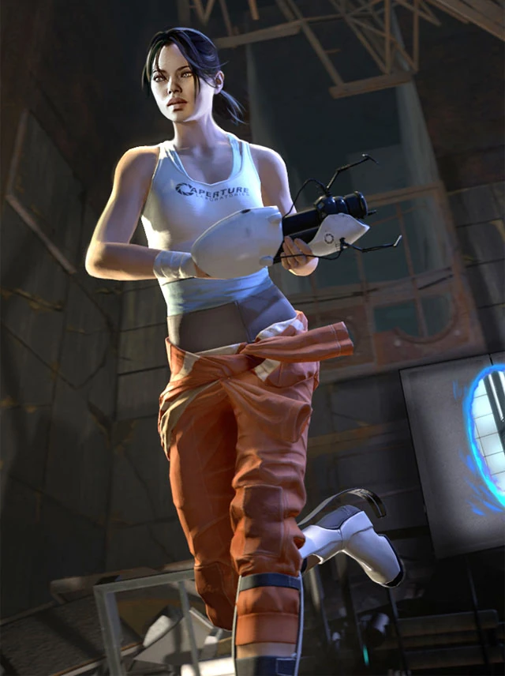

Chell

Chell, documented as Test Subject #234,
is the silent protagonist of Portal and the single-player campaign of Portal 2;
she is a former Aperture Science Test Subject.
Fun facts:
- Chell's last name is never revealed in Portal 2, keeping her identity a mystery throughout the series.
- Despite being mute, Chell is incredibly expressive through her body language, especially during interactions with GLaDOS.
- The long fall boots she wears absorb all impact, allowing her to survive any height without taking damage.
Read the
Half-Life Wiki
for more information!